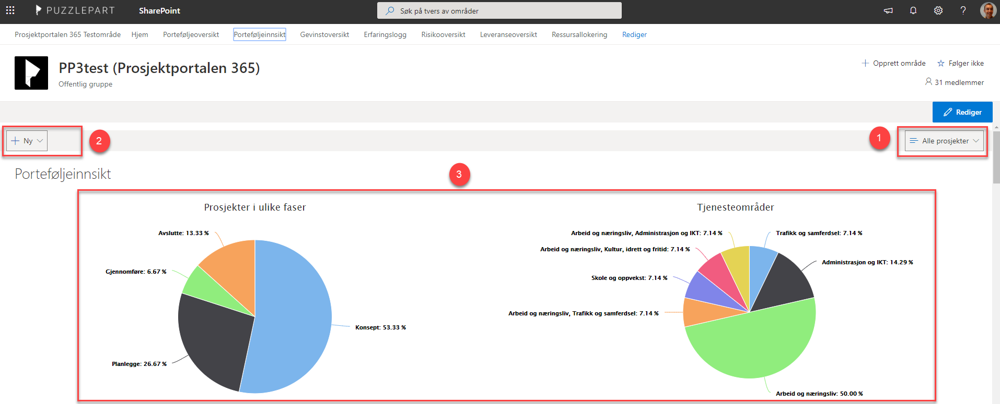

Med porteføljeinnsikten vil du kunne sammenstille data om prosjektet, og vise disse med grafiske elementer. Det finnes flere visninger som er forhåndsdefinert i Prosjektportalen, og nye kan også settes opp om ønskelig.

Med filter-listen på høyre side kan du velge mellom de ulike visningene.
Med «Ny»-knappen kan du opprette egne visninger.
Dette er selve visningsområdet, hvor de ulike grafiske elementene vises. Det er kun data fra prosjekter hvor du har tilgang som vises i rapport seksjonen.